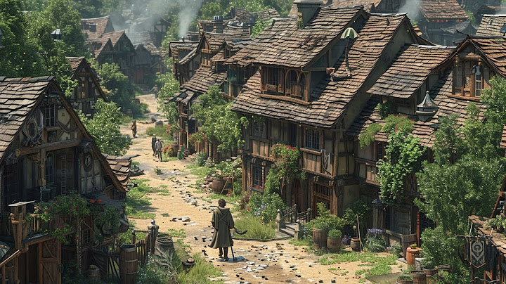
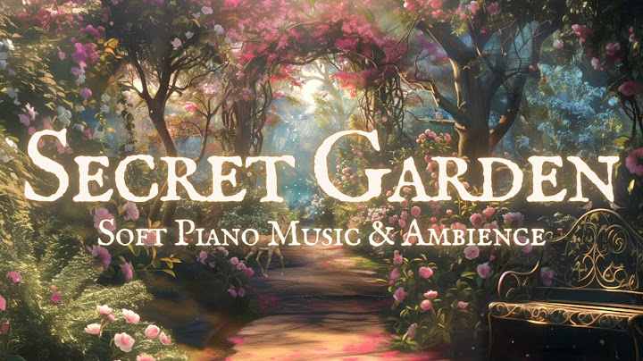

53:06
Marcos Vidal - Cara a Cara | Álbum Completo
67 k views · 1 month ago

10:29:20

Relaxing Medieval Music | Medieval Celtic Music - Daily Life As A villager -...
392 k views · 2 months ago

26:47
Secret Garden 2 | Soft Piano Playlist & Ambience | Peaceful Fantasy String Ambience from a FairyTale
370 k views · 1 month ago
14:20

If God Knows the Future, What is Free Will? | Episode 710 | Closer to Truth
62 k views · 3 years ago

14:20

Mejor Piano Ghibli 🌿 Hermosas Piezas de Piano Intemporales de las Películas Ghibli 🌿 Música Ghibli de Studio Ghibli BGM
24 k views · 3 weeks ago
14:20
If God Knows the Future, What is Free Will? | Episode 710 | Closer to Truth
62 k views · 3 years ago